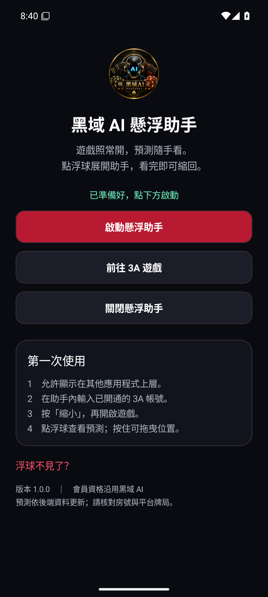

ANDROID ASSISTANT黑域 AI 懸浮助手
遊戲照常開
預測隨手看
安裝 App，點浮球就能查看黑域 AI。可以自由拖曳位置，看完縮回遊戲，不必再設定 Chrome 書籤。
Android 8.0 以上・沿用會員資格 下載 Android 安裝檔
安裝一次，就能叫出助手
- 使用 Chrome 開啟本頁，下載安裝檔。
- 點下載完成的 APK。若系統要求，允許這次使用的瀏覽器「安裝未知應用程式」，完成安裝後可關閉此權限。
- 開啟「黑域 AI 懸浮助手」，按啟動懸浮助手。
- 依提示允許顯示在其他應用程式上層，再返回助手。
- 輸入已開通的 3A 帳號，選擇遊戲與房間。
- 按縮小再開啟遊戲。點浮球展開，按住浮球可拖曳。
若頁面仍開在 LINE 裡，請將下載頁連結複製到 Chrome 開啟。首次系統通知授權可讓你從通知列快速關閉助手。
使用時的小提醒
怎麼關閉助手？
點助手面板的「關閉」、App 首頁的「關閉懸浮助手」，或通知列的「關閉助手」，都能移除浮球。
浮球不見了？
回到 App 再按「啟動懸浮助手」。若經常發生，可在手機的 App 電池設定允許背景執行。部分遊戲或安全畫面會隱藏浮窗。
助手顯示連線失敗？
確認網路後按「重試」。預測仍以後端資料更新，請核對房號及莊、閒、和是否與平台一致。
之後如何更新？
下載新版本 APK 並直接安裝，即可保留原有登入。不要先解除安裝；清除 App 資料或解除安裝後，需要重新登入。
iPhone 可以裝嗎？
此 APK 只適用 Android。iPhone 請使用原有的 Safari 助手安裝方式。